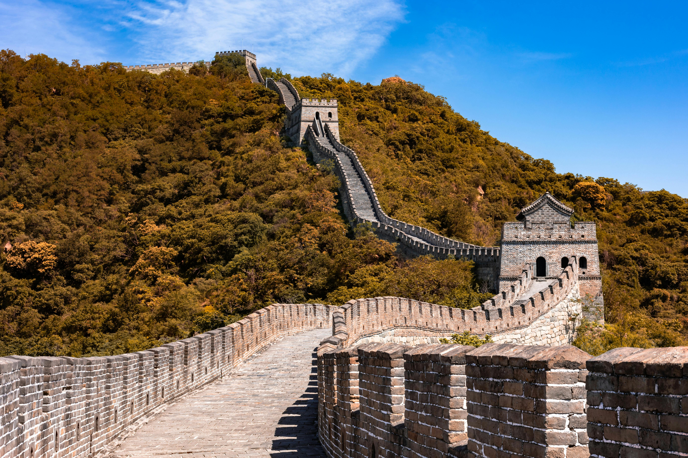

La Grande Muraille de Chine : Une Merveille Architecturale
La Grande Muraille de Chine, un témoignage impressionnant de l'ingénierie et de la persévérance humaine, est un ensemble de fortifications militaires construites, détruites et reconstruites sur plusieurs siècles, du IIIe siècle avant J.-C. jusqu'au XVIIe siècle, afin de protéger les différentes dynasties chinoises des invasions nomades venues du nord. S'étirant sur plus de 21 000 kilomètres à travers des paysages variés, des déserts arides aux montagnes escarpées, elle est la plus grande structure architecturale jamais réalisée par l'homme en termes de longueur, un véritable dragon de pierre serpentant à travers le pays
- Localisation : La Grande Muraille serpente à travers le nord de la Chine, un symbole de défense traversant des paysages variés. Elle traverse plusieurs provinces, notamment le Hebei (où se trouvent Badaling et Mutianyu, près de Pékin), Tianjin et d'autres régions jusqu'à l'ouest du pays. Cette position frontalière nordique lui conférait un rôle défensif crucial.
- Accès : L'accès varie selon les sections. Près de Pékin, Badaling est très accessible (bus directs), mais souvent bondée. Mutianyu offre une expérience plus paisible, également accessible en bus et taxi. Simatai, plus sauvage, nécessite parfois de la randonnée. Pour les sections plus éloignées, une planification plus poussée est nécessaire.
- Notoriété : La Grande Muraille de Chine est un symbole mondialement reconnu, inscrite au patrimoine mondial de l'UNESCO depuis 1987. Elle incarne la force et l'histoire de la Chine, attirant des millions de visiteurs chaque année. Son image, bien que parfois embellie par des mythes comme sa visibilité depuis l'espace, reste un puissant symbole culturel et une attraction touristique majeure.
La Grande Muraille est un témoignage de l'ingéniosité des anciens Chinois, offrant des paysages à couper le souffle.
Pour en savoir plus, visitez le site officiel :
Site officiel de la Grande Muraille